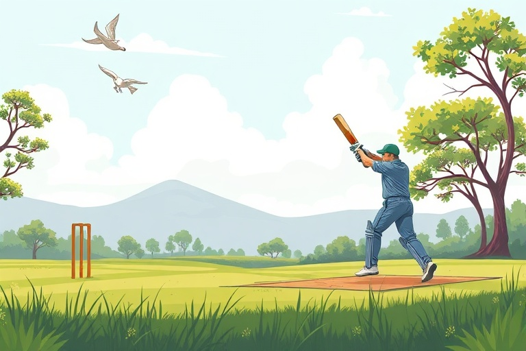

Cricket for Beginners: A Complete Guide to Rules, Equipment, and Fundamental Skills
Category: cricket | Language: en
Cricket is a team bat-and-ball sport played between two sides of eleven players on an open grass field. The central goal of the game is straightforward: the batting team attempts to score as many runs as possible, while the bowling and fielding team works to restrict those runs and dismiss ten of the opposing batters. At the end of both turns, or innings, the team with the higher aggregate run total wins the match. This beginner guide breaks down the structure of a match, the field setup, key scoring methods, primary dismissals, and foundational techniques so that anyone can follow or start playing the game with confidence.
The focal point of every cricket ground is the pitch, a flat, hard rectangular strip in the centre of the field measuring 22 yards (20.12 metres) in length. At each end of the pitch stand three wooden posts called stumps, topped with two small wooden crosspieces known as bails; together, these form the wicket. Marked painted lines called creases define specific functional zones on the pitch. The bowling crease sits in line with the stumps, while the popping crease is placed four feet in front of it. A batter must keep some part of their body or bat grounded behind the popping crease to remain safely in their ground during active play.
Matches are structured around turns called innings and sequences called overs. One over consists of six consecutive legal deliveries delivered by a single bowler from one end of the pitch. Once an over is completed, another bowler delivers six balls from the opposite end, and the fielding positions adjust accordingly. In limited-overs formats such as Twenty20 (T20) or One Day Internationals (ODIs), each team bats for a set quota of overs—20 and 50 overs per side, respectively—unless all ten possible wickets fall earlier. In traditional multi-day formats like Test cricket, play is measured by days rather than strict over limits, with each side batting twice.
A batter scores runs primarily through physical running or by hitting the ball across the boundary rope that marks the perimeter of the field. When the ball is struck into vacant space, both batters can sprint back and forth between the popping creases at opposite ends, scoring one run each time they cross and ground their bats safely. If the batter strikes the ball so that it touches the turf before crossing the boundary perimeter, their team earns an automatic four runs. If the ball clears the boundary perimeter on the full without touching the ground, the batting side receives six runs. Teams can also collect extra runs, known as extras, if the bowler delivers an illegal delivery, such as a wide (too far off-target to reach) or a no-ball (stepping over the popping crease or bowling above waist height without bouncing).
A bowler and the fielding team have several distinct methods to dismiss a batter, commonly referred to as taking a wicket. The five most common dismissals are bowled, caught, leg before wicket (LBW), run out, and stumped. A batter is bowled if the delivery gets past the bat and dislodges the bails from the stumps. A catch occurs when a batter strikes the ball and a fielder securely holds it before it touches the turf. Leg before wicket happens when the ball strikes the batter's protective pads in a direct path that the umpire determines would have crashed into the stumps, provided the delivery pitched legally. A run out occurs when the fielding side throws the ball into the stumps to dislodge the bails while the batter is running and outside their crease. Finally, a stumping happens when the batter misses the ball, steps outside their crease, and the wicketkeeper quickly removes the bails with the ball in hand.
To begin batting successfully, players must establish a balanced stance and a neutral grip. Hold the handle of the bat with both hands close together; the 'V' shape formed between the thumb and index finger of each hand should point downward along the back spine of the bat blade. Stand side-on to the bowler with feet shoulder-width apart, knees slightly flexed, and eyes level. For beginner bowling, focus entirely on keeping the bowling arm straight throughout the delivery swing. Unlike a baseball pitch, a cricket bowler must not flex or snap their elbow forward to propel the ball; the arm rotates in a windmill-style arc over the shoulder, releasing the ball at the highest point of the stride onto a bouncing trajectory toward the pitch.
Because a standard leather cricket ball is hard, heavy, and compressed, proper protective gear is mandatory when playing hard-ball cricket. Batters must wear a safety-certified helmet with a steel face grille, padded leg guards to protect the shins and knees, padded gloves to shield the fingers from impact, and an abdominal guard (commonly called a box) inserted into supportive undergarments. Additional protective gear includes thigh pads and arm guards. Beginners learning fundamental movement patterns should start with a soft rubber ball or a regular felt tennis ball, which removes physical danger and eliminates the high cost of complete protective equipment while building initial hand-eye coordination.
A common tactical mistake made by novices is attempting to hit across the line of the ball on every delivery, swinging horizontally like a baseball swing. This cross-bat approach creates substantial gaps between the bat and the body, leading to missed balls, shattered stumps, or uncontrolled top edges that are easily caught by fielders. Instead, beginners should practice the forward defensive stroke and the straight drive, keeping the bat vertical and meeting the ball directly underneath the line of sight. By keeping the bat straight and playing with the bounce rather than fighting it, a batter significantly reduces their risk of dismissal.
To build your skills practically, begin with simple stationary drills in a back garden or local recreation ground. Set up a single target stump or a plastic cone, use a tennis ball, and take turns bowling with a straight arm to hit the marker from fifteen to eighteen yards away. If practicing batting, have a partner drop or gently underarm bounce a ball directly in front of your front foot so you can practice driving the ball forward with a vertical bat face. As consistency improves, transition to local club training nets, join a community beginner group, and follow full-length match broadcasts to observe how professional players set field positions, manage running between wickets, and judge the bounce of the pitch.